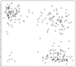
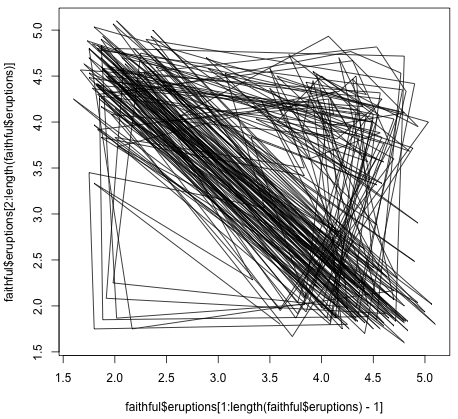
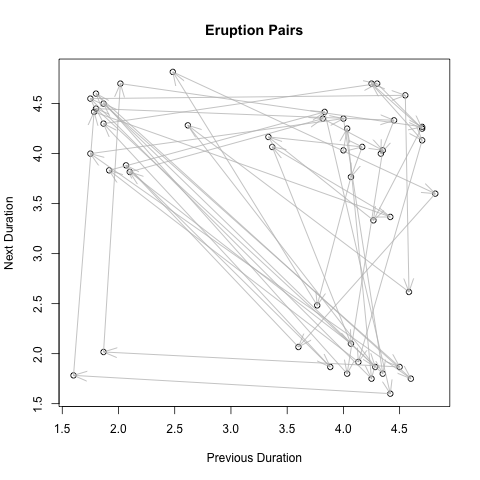

Time-Successive Old Faithful Eruption Durations
 Because of the observed data, a four group clustering emerges when successive eruption durations of the famous geyser are plotted. The x axis is the first eruption and y is the next.
{kind=link}
There appear to be four kinds of eruption pairs: 1. two short eruptions (the bottom-left, small cluster), 2. a short eruption followed by a long eruption, and the respective opposites (long-long and long-short).
Because the Old Faithful eruption data comes built into R, the code for this is just a single line:
plot( faithful$eruptions[1:length(faithful$eruptions)-1], faithful$eruptions[2:length(faithful$eruptions)], xlab="Previous Duration", ylab="Next Duration", main="Eruption Pairs" )
A line graph shows the state transitions. Notice that there are no bottom-left to top-right transitions. Curious!

We can sample a subset of the Old Faithful eruption data and add arrows from previous to next observation. Here is the R code:
z <- sample( faithful$eruptions, 50 )
x <- z[ 1 : length(z) - 1 ]
y <- z[ 2 : length(z) ]
plot( x, y, xlab = "Previous Duration", ylab = "Next Duration", main = "Eruption Pairs" )
s <- seq( length(x) - 1 ) # one shorter than data
arrows( x[s], y[s], x[ s + 1 ], y[ s + 1 ], length = 0.2, angle = 20, col = "gray" )
And here is the plot:
